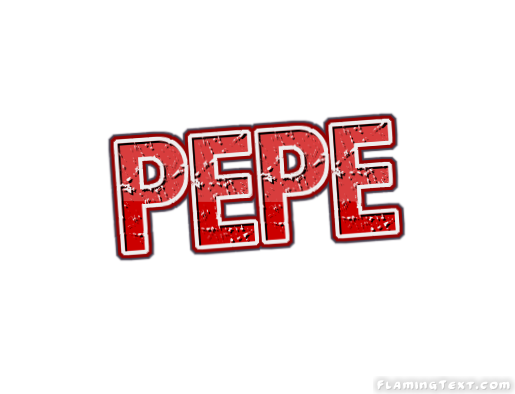

my portfolio

My backgraound
My proyects
My experience
Leonardo da Vinci (Leonardo di ser Piero da Vinci) Loudspeaker.svg escuchar (Vinci, 15 de abril de
14522-Amboise, 2 de mayo de 1519) fue un polímata florentino del Renacimiento italiano. Fue a la vez
pintor, anatomista, arquitecto, paleontólogo,3 botánico, escritor, escultor, filósofo, ingeniero,
inventor, músico, poeta y urbanista. Murió acompañado de Francesco Melzi,4 a quien legó sus proyectos,
diseños y pinturas.2 Tras pasar su infancia en su ciudad natal, Leonardo estudió con el pintor
florentino Andrea de Verrocchio. Sus primeros trabajos de importancia fueron creados en Milán al
servicio del duque Ludovico Sforza. Trabajó a continuación en Roma, Bolonia y Venecia, y pasó sus
últimos años en Francia, por invitación del rey Francisco
Frecuentemente descrito como un arquetipo y símbolo del hombre del Renacimiento, genio universal, además de
filósofo humanista cuya curiosidad infinita solo puede ser equiparable a su capacidad inventiva,5 Leonardo
da Vinci es considerado uno de los más grandes pintores de todos los tiempos y, probablemente, la persona
con el mayor número de talentos en múltiples disciplinas que jamás ha existido.6 Como ingeniero e inventor,
Leonardo desarrolló ideas muy adelantadas a su tiempo, tales como el helicóptero, el carro de combate, el
submarino y el automóvil. Muy pocos de sus proyectos llegaron a construirse (entre ellos la máquina para
medir el límite elástico de un cable),Nota 2 puesto que la mayoría no eran realizables en esa época.Nota 3
Como científico, Leonardo da Vinci hizo descubrimientos sustanciales en las áreas de anatomía, la ingeniería
civil, la óptica y la hidrodinámica, pero puesto que no publicó jamás sus hallazgos estos tuvieron escasa
influencia, si es que alguna, en la ciencia posterior
REDES SOCIALES
facebook
twiter
instagram